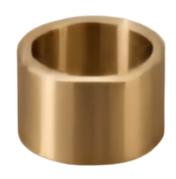
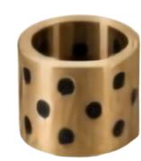
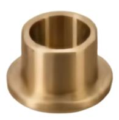

Lini Produk Paduan

Kuningan Kuning No. 41
Untuk pengecoran komersial umum dengan biaya rendah dan hasil akhir baik. Mudah dikerjakan dengan mesin, permukaan kuning halus, sangat baik untuk penyolderan dan pematrian keras.
| Komposisi | Min % | Maks % |
|---|---|---|
| Tembaga | 62 | 67 |
| Timah | — | 1,0 |
| Timbal | 1,5 | 3,5 |
| Seng | sisanya | |
| Besi maks 0,75 · Al maks 0,30 | * | |

Kuningan Merah No. 40
Untuk komponen coran yang menahan tekanan gas & hidrolik tinggi. Ketahanan sangat baik terhadap air laut, larutan garam, dan lingkungan abrasif. Mudah disolder, dipatri, dilas.
| Komposisi | % |
|---|---|
| Tembaga | 84 |
| Timah | 4 |
| Timbal | 4 |
| Seng | 4 |

Perunggu Phosphor No. 64
Sifat anti-gesek dengan ketahanan keausan & lecet gesekan tinggi. Tahan korosi sangat baik, kemampuan pemesinan baik, hasil akhir halus dengan toleransi ukuran ketat.
| Komposisi | Min % | Maks % |
|---|---|---|
| Tembaga | 78,50 | 81,50 |
| Timah | 9 | 11 |
| Timbal | 9 | 11 |
| Seng (maks) | — | 0,75 |
| Fosfor | 0,05 | 0,25 |

Perunggu Mangan No. 43
Untuk komponen cor yang menuntut kekuatan mekanis tinggi dan ketangguhan. Tahan korosi baik, banyak dipakai untuk suku cadang kapal. Perhatian khusus pada saluran masuk & penambah mencegah cacat penyusutan.
| Komposisi | Min % | Maks % |
|---|---|---|
| Tembaga | 55 | 60 |
| Seng | 38 | 42 |
| Mangan | 1,0 | 3,5 |
| Timah (maks) 1,5 · Timbal (maks) 0,4 | * | |
| Besi maks 1 · Al maks 1,5 | * | |

Perunggu Aluminium No. 68A
Kekuatan tinggi, tahan korosi baik, kekerasan setara perunggu mangan. Tetap menjadi bantalan baik dengan pelumasan memadai. Tahan gas & cairan bertekanan dan suhu tinggi hingga 399°C.
| Komposisi | Min % | Maks % |
|---|---|---|
| Tembaga | 87 | 89 |
| Aluminium | 7 | 9 |
| Besi | 2,5 | 4 |
Semua Paduan
Dikendalikan Secara
Ketat.
Setiap paduan diuji kekuatan tarik, titik luluh, dan pemanjangan sebelum dikirim ke pelanggan. Komposisi kimia mengikuti batas min–maks yang tertera pada sertifikat material.